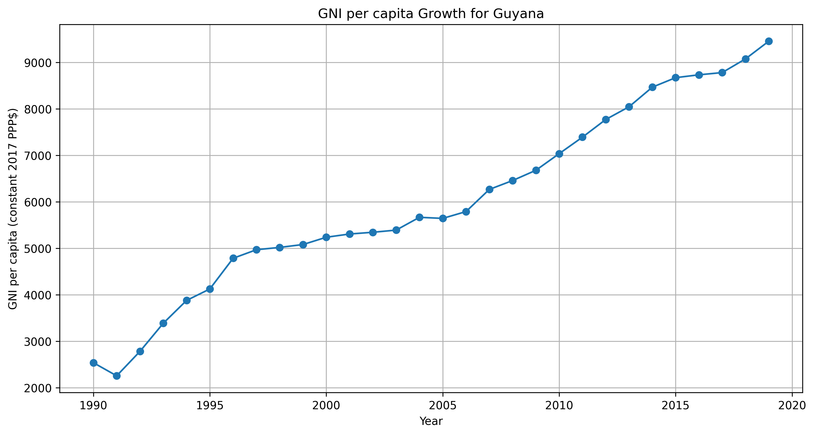
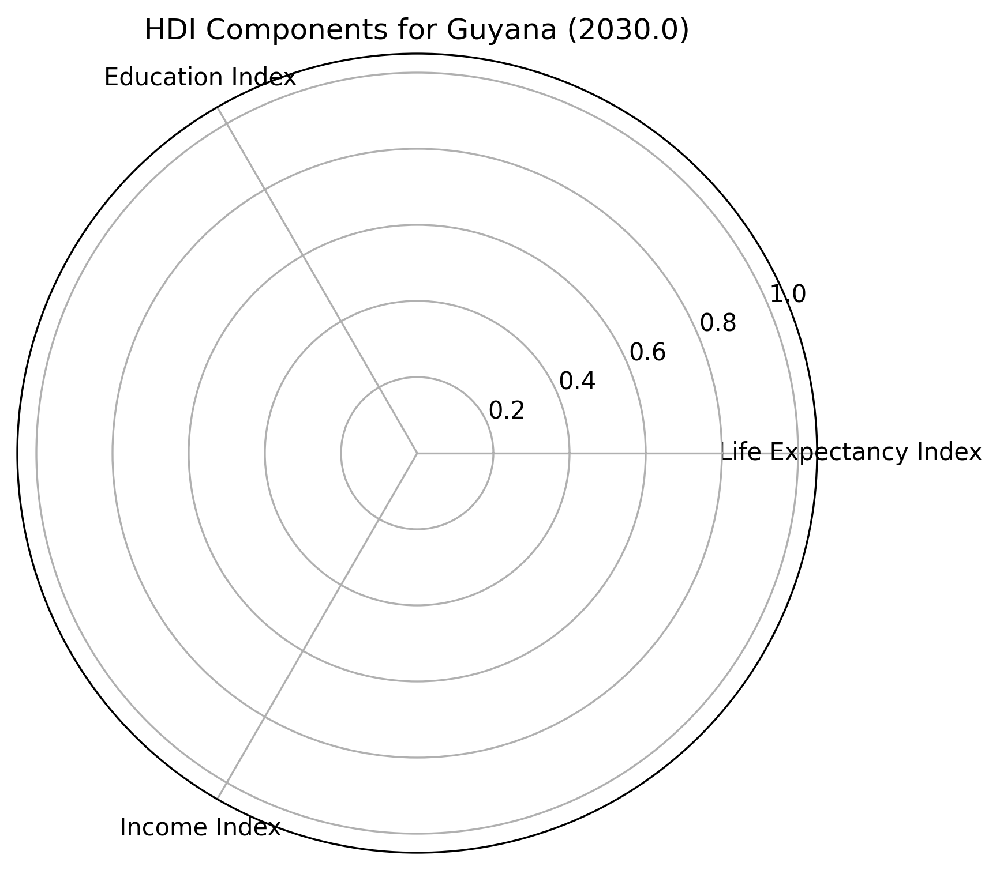

Strategies for Addressing Challenges and Improving HDI
1. Sustaining Economic Growth

Guyana's GNI per capita has shown significant growth, particularly since the early 2000s:
- 1990: $2,537
- 2000: $3,387
- 2010: $5,744
- 2019: $9,455
To sustain and accelerate this growth, we recommend:
- Diversifying the economy beyond traditional sectors like agriculture and mining.
- Investing in infrastructure to support emerging industries, particularly in light of recent oil discoveries.
- Implementing policies to ensure equitable distribution of economic gains, preventing wealth concentration and promoting inclusive growth.
- Fostering entrepreneurship and small business development through targeted support programs and improved access to capital.
2. Enhancing Education Outcomes

While education indicators have improved, there's significant room for further progress. We recommend:
- Increasing investment in education infrastructure, particularly in rural and underserved areas.
- Implementing programs to improve school retention rates, especially at the secondary level.
- Enhancing teacher training programs to improve the quality of education.
- Expanding vocational and technical education options to better align with labor market needs.
- Developing adult education programs to increase Mean Years of Schooling among the existing workforce.
3. Improving Health Outcomes

The radar chart shows that the Life Expectancy Index, while improved, remains the lowest scoring component of Guyana's HDI. To address this, we recommend:
- Increasing healthcare spending, with a focus on primary care and preventive medicine.
- Implementing targeted programs to address the main causes of premature mortality, such as non-communicable diseases.
- Improving access to clean water and sanitation, particularly in rural areas.
- Enhancing maternal and child health services to further reduce infant and maternal mortality rates.
- Developing public health campaigns to promote healthy